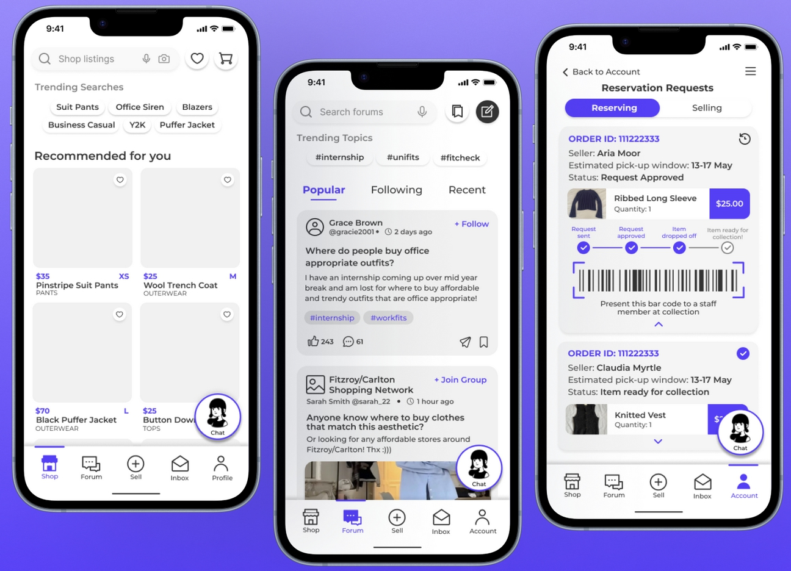
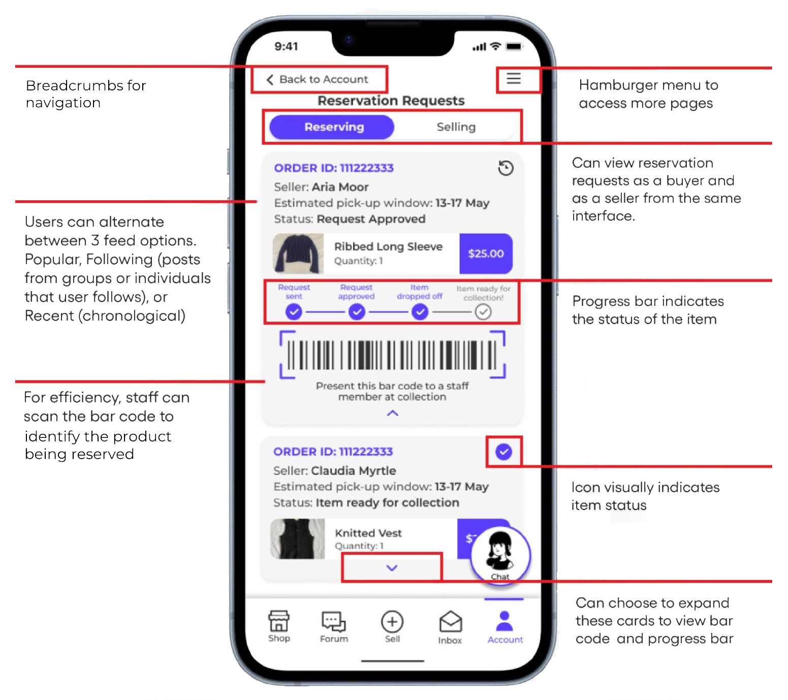
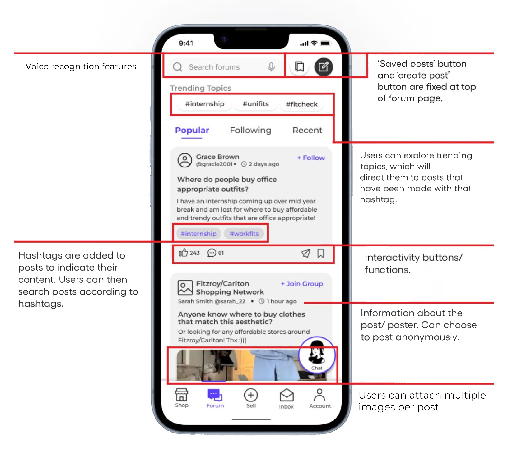
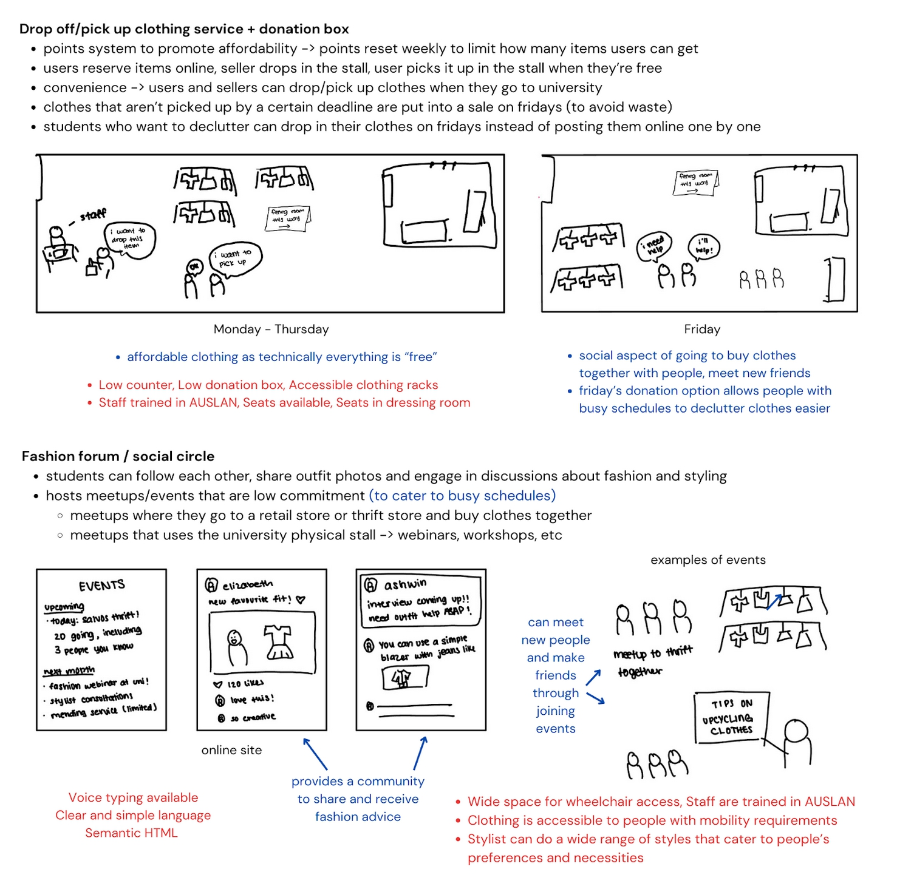
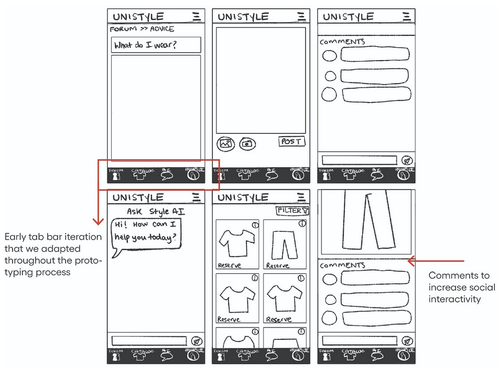
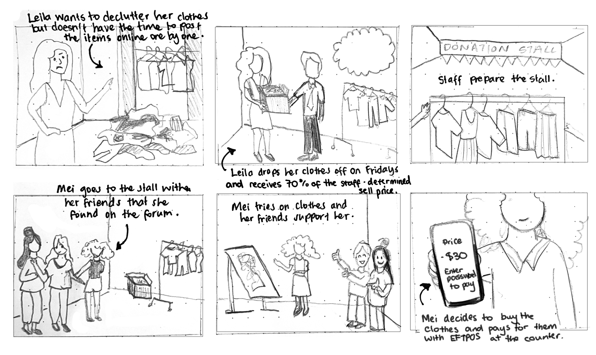

unistyle
UniStyle is a proposed service for the University of Melbourne Student Union. It includes an online forum dedicated to styling and fashion advice, a clothing sales platform with both digital and in-person touchpoints, and an AI-integrated conversational agent that serves as a styling assistant. The service is intended to provide a convenient and affordable way for students to improve their style, become more confident, and foster social interaction. It takes into account accessibility design, particularly for students with motor and hearing disabilities.
  Screenshots of the final high-fidelity prototype.
ideation
We crafted a problem statement that our service would address:
"Students encounter challenges in finding and styling affordable clothing for their careers and personal lifestyles due to their busy schedules. They are eager to be part of a community and build their social and professional confidence. They would like an outlet to express their creativity and help others by exchanging fashion tips/advice and decluttering clothes respectively."
After several brainstorming sessions, we settled on the concept of a clothing donation service with an accompanying online forum. This concept allowed for the online and in-person components to synergise well. It also met our criteria of being convenient, low-cost and socially engaging.
Initial concept for the chosen service idea, including notes on accessibility.
prototyping
To ensure equity, we initially developed a points-based system to limit the amount of clothing students could take in a week. However, after receiving feedback from student users, we transitioned to a simpler currency-based system that would provide more of an incentive to donate to the service.
I created several wireframe iterations for the companion website, refining them to incorporate user feedback. A mobile-first design allowed us to scale up for desktop. Annotations were also used for the later wireframes to show accessbility design considerations. I made the most changes to the layout of the navigation bar and forum section, as we received feedback about the navigation being unintuitive. To address this, several sections of the website were renamed, such as the "Community" section being changed to "Forum" to align with external mental models.
Initial wireframe sketches for the mobile design.

A later iteration of the prototype, created on Figma with the A11y annotation toolkit. The layout was further optimised for mobile navigation, and screens were added showing the clothing purchase and checkout process.

The customer journey map gives an example of a standard customer interaction with the service based on the initial user person, including both digital and physical touchpoints. The shift from a points-based to currency-based system for the service can be seen in this diagram.
go back